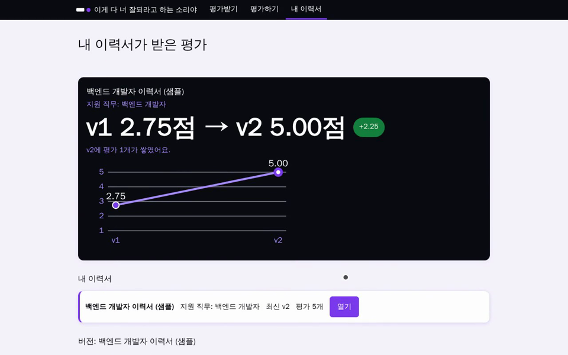

데모


직접 체험하기(QR)
https://host-10-0-0-56.tail21684f.ts.net:8443
79초 실제 사용 영상
업로드 → 개인정보 가리기 → 게시 → 핀 첨삭 → 버전별 결과 확인 (발표자의 실제 이력서)7 / 10
KIROTHON 2026 · 내 일상에 바로 적용할 수 있는 서비스
이름은 가리고, 이력서 위에서 직접 조언받고, 버전별로 결과를 모읍니다.
지인 몇 명뿐. 더 많이 받고 싶지만, 첨삭 서비스는 이름과 원문을 공개해야 해서 망설여진다.
개인정보를 지우려고 글자만 복사해 보내면, 디자인과 읽기 편한지는 평가받지 못한다.
수정본은 늘어나는데, 어느 파일에 어떤 피드백을 받았는지 찾기 어렵다.
이력서를 고치고 다시 낸 기간
새로 만든 제출용 이력서
피드백이 흩어진 메모와 대화
제출용 버전 (16일 동안)
회사별로 고친 맞춤 버전
버전별 피드백을 모아 둔 곳: 없음
파일 버전은 관리됐지만, "이 버전에 어떤 조언을 받았나"는 관리되지 않았습니다
평가자는 가려진 이미지만 봅니다. 서로 누구인지 알 수 없습니다.
| 역할 | 맡은 일 | 고칠 수 있는 범위 |
|---|---|---|
| 기획 | 만들 기준 정리 | 문서만 |
| 구현 | 기능 만들기 | 전체 |
| 테스트 | 확인 항목 작성 | 기능 코드는 못 고침 |
| 점검 | 실행해서 결과 확인 | 없음 |
| 검토 | 다른 AI가 독립 검토 | 없음 |
노트북 화면이 고장 났고 외부 모니터를 깜빡했습니다. 그래서 핸드폰에서 지시하고 결과를 확인했습니다.
디자인·문구·접근성·데모 담당이 먼저 점검하고, 구현 담당 6명이 나눠서 만들었습니다
검토에서 찾은 문제를 고치고 다시 테스트하는 과정을 반복했습니다
"동시에 시작해", "휴대폰 화면부터"처럼 한 줄로 작업 중인 팀의 방향을 바꿨습니다
자동 확인 항목
동시에 일한 AI 담당자
다른 AI의 독립 검토

홍길동홍길 백엔드 개발자 지원
이메일 abcdefghij@example.com
전화 010-0000-0000
결제 API 응답 시간 40% 단축 (420ms → 250ms)
레이아웃·글꼴·강조는 그대로 남아 디자인까지 평가받는다
| 항목 | 기존 | 이 서비스 |
|---|---|---|
| 평가를 부탁할 사람 | 지인 몇 명 | 무작위로 연결된 익명 평가자 |
| 공유용 사본 만들기 | 버전마다 손으로 개인정보 삭제 | PDF 업로드 후 가린 모습 확인 |
| 디자인 평가 | 텍스트 공유 시 불가 | 디자인이 그대로인 이미지로 가능 |
| 피드백 형태 | "전반적으로 좋네요" | 고칠 곳을 짚는 핀 첨삭 |
| 버전별 평가 | 메신저·메모에 흩어짐 | 버전마다 한 화면, 평균 점수 비교 |
이름은 가리고, 고칠 곳은 정확히 짚어 주는 이력서 평가.